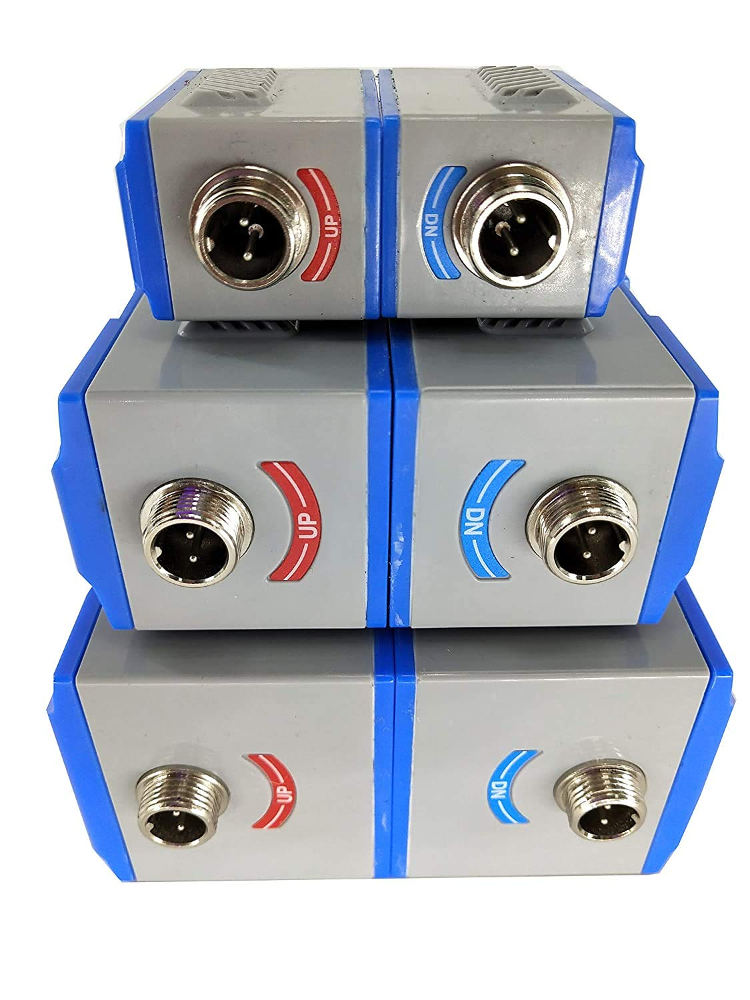

📞 +507 6675-8529
✉ contacto@zernikeal.com
El equipo funciona midiendo la diferencia de tiempo que tarda una señal ultrasónica en recorrer el fluido en la dirección del flujo y en sentido contrario. A partir de esta diferencia, el sistema calcula la velocidad del líquido y determina el caudal con gran precisión.
Gracias a su tecnología ultrasónica tipo clamp-on, los sensores se instalan en la parte externa de la tubería, lo que permite realizar la medición sin cortar la línea, sin detener el proceso y sin modificar la instalación existente. Este tipo de medición es especialmente adecuado para líquidos homogéneos con bajo contenido de sólidos y sin presencia significativa de burbujas de gas.
Ventajas principales
Aplicaciones
Especificaciones técnicas
Tipo de medición
Ultrasónica por tiempo de tránsito
Precisión
Hasta ±0,5 %
Repetibilidad
Mejor de 0,2 %
Diámetros de tubería
DN15 hasta DN6000
Velocidad del flujo
−16 a +16 m/s (medición bidireccional)
Temperatura del fluido
−30 °C a +90 °C / hasta +160 °C versión alta temperatura
Tipos de líquidos
Agua, líquidos industriales homogéneos, combustibles, alcoholes
Salidas
4–20 mA, pulso, frecuencia
Comunicación
RS485 / RS232 – Protocolo MODBUS
Alimentación
24 VDC o 85–264 VAC
Imágenes del producto

Descarga ficha técnica